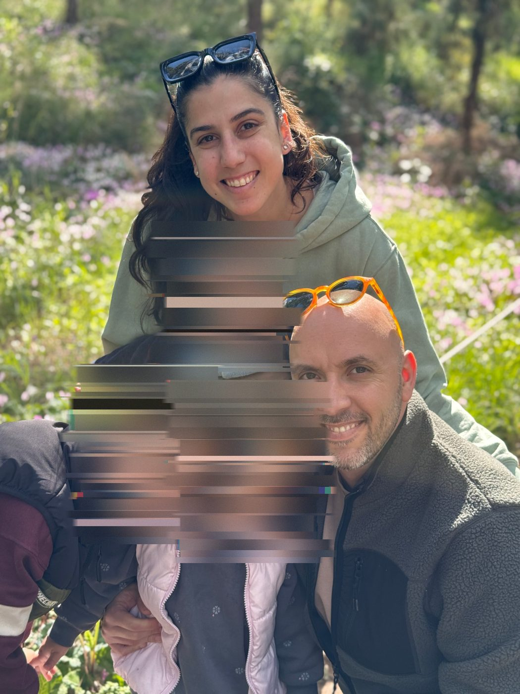

לחצו כדי לדלג

ביקשתי ממודל לייצר תמונה של "צחי שמש, מעצב פנים בן 43, בעל משרד עצמאי ומרצה". הוא החזיר גבר בן 55, עם זקן אפור, בלייזר כהה וסלון עם שיש. כשנתתי לו סלפי אחד שלי, הוא הוסיף לי ילדות בסנטרל פארק. הוא לא טעה בגלל חוסר מידע. הוא טעה בביטחון מלא, כי זה מה שהוא יודע לעשות: למלא את החסר בממוצע.
העמוד נפתח כמו האתר שמודל היה בונה לי: גרדיאנט, כותרת ממורכזת, כרטיסים מעוגלים, "מעצב פנים יצירתי ונלהב". אחרי רגע הוא נשבר, ומתחתיו מתגלה שדה של אותיות. זה הסדר שלי: גריד מודולים קבוע, כל תא באותו גודל, כל מודול עם קואורדינטה, כמו דף של מילר-ברוקמן. בתוך הסדר הזה רצים משפטים אמיתיים עליי, ובאדום הניחושים של המכונה. השם שלי מופיע שם עם סימן שאלה, ומתפרק ברגע שמתחילים לגלול.
ככל שמתרחקים, המכונה נסוגה. הניחושים האדומים דוהים, ועל התמונות שהמודל ייצר עליי היד שלי מסמנת איקס. במקומן מופיע מה שאף מודל לא יכול לדעת, בכתב היד שלי: חמשת הבתים שגרתי בהם לפני הגיוס, מחוברים במסלול שציירתי כמו בתוכנית. כמעצב פנים, כך אני חושב: בתוכניות, במסלולים ובמעברים בין חללים, ולא בתמונה אחת. איך שהילדים קוראים לי. ריח של חול שמזכיר לי את להבים. אבא שלי. אחותי. אני לא כותב את זה כדי להסביר מי אני, אלא כדי להראות שהזהות שלי בנויה מקשרים בין מקומות ואנשים, ולא מתיאור.
את כתב היד לא ניקיתי. האותיות עקומות, חסרות לי אותיות סופיות, ויש מילים שמחקתי והשארתי. מחיקה היא יד שחושבת, ואת זה המכונה לא מייצרת.
הפנים של הילדים שלי נשארות שבורות עד הסוף, בגליץ'. זו הבחירה היחידה בעבודה שבה השבירה מגינה. מה שלא שייך לרשת לא נכנס אליה.
בהרצאה של היטו שטיירל שמעתי שהשימוש בבינה מלאכותית חייב להיות עם חיכוך. העבודה הזו בנויה על החיכוך הזה: המכונה נותנת את הממוצע מיד, והאמת דורשת מאמץ, יד, וזמן. גם את העמוד עצמו בניתי עם בינה מלאכותית, וכל הצעה שלה שנראתה נקייה מדי נדחתה. התהליך הזה מתועד בריפו.
אבא שלי היה אומר בוויכוחים: "אל תהיה צודק, תהיה חכם". המודל תמיד צודק בעיני עצמו. ניסיתי להיות חכם.